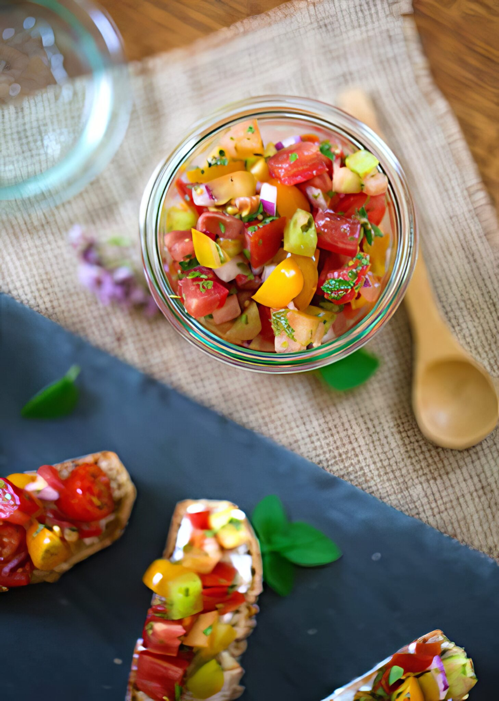

Fresh, juicy tomatoes tossed with oregano, thyme, and a simple dressing create a bright, herby salad that's bursting with flavor. It's quick, refreshing, and the perfect way to showcase ripe summer tomatoes.
Cut the tomatoes into dice no larger than ½ inch - even smaller if they're firm, and you have the patience.
Combine the tomatoes in a serving bowl with the remaining ingredients and let stand for a few minutes before serving.